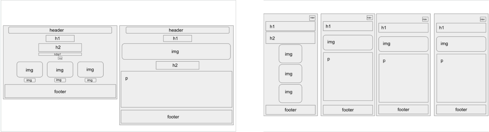
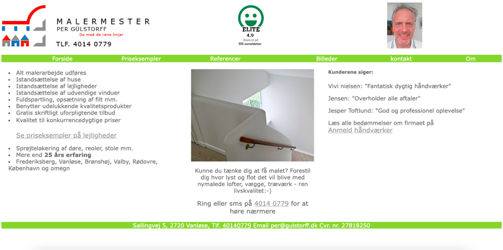

Tema 1
Vores første tema var introuge. Vi lærte, hvad det indebærer at være Multimediedesigner. Vi fik introduceret VS Code, Adobes Creative Cloud pakke og bestilte vores eget domæne. Vi lavede præsentationskort i Figma for at lære hinanden at kende i klassen, og så blev vi tildelt grupper hvor vi skulle lave en kort introfilm med et tema. Pigerne i gruppen blev enige om et Barbie tema, og vores video vandt en præmie for bedste idé. Videoen kan ikke vises på min side fordi den er privat, men i kan klikke nedenunder for at gå ind og se den på YouTube.
Tema 2
I Tema 2 skulle vi kode vores første hjemmeside. Vi fik en introduktion til grundlæggende webudvikling og design, og vi fik introduceret de grundlæggende værktøjer vi kommer til at bruge på Multimediedesign, herunder digitale brugergrænseflader og responsivt webdesign. Vi fik intro til HTML og CSS, og lærte at bruge dem i praksis. Derudover fik vi også introduceret Figma, Photoshop og Adobe XD. Indenfor design arbejdede vi med designkonventioner, moodboards og style tiles, som er brugbare redskaber til at komme igang med at designe og udvikle brugergrænseflader. De bruges også til at skabe wireframes i lo- og hi-fi prototyper. Derudover lærte vi også om farver, typografi, tekstopsætning, gestaltprincipper og ophavs- og licensrettigheder ved brug af billeder fra nettet. Indenfor kodning fik vi introduktion til Visual Studo Code, som er vores ‘arbejdsplads’ indenfor kodning, hvordan vi får uploadet til vores egen hjemmeside med FileZilla, arbejdet med responsivt design, så vores hjemmesider fremadrettet kommer til at fungere og se godt ud på mobil såvel som på desktop, ved brug af media queries. Også hvordan vi får valideret vores HTML og CSS, så hjemmesiderne fremstår uden kodefejl. Vi arbejde også med CSS grid og flexbox, semantisk markup af billeder og tekst, og mappestruktur, så vi kan finde rundt i vores projekter, og hvordan vi inspicerer hjemmesider ved brug af Developer Tools.
Min færdige hjemmeside for Tema 2 kan i se ved at klikke her
Tema 3
I Tema 3 fik vi til opgave at udvikle et emnesite efter eget valg. Min første idé var, at lave en hjælpeside til folk med spilleproblemer, hvor de kunne blive henvist til professionel hjælp. Jeg indså dog kort efter at jeg var gået igang med mit design, at jeg vil have svært ved at få nok indhold på siden til at møde de krav, vi havde. Jeg bestemte mig derfor for at lave en informationsside om de mest spillede casinospil, da jeg følte at der var mere indhold at putte på. Jeg indså at jeg var gået fra ville lave en side med hjælp til ludomani til at lave en side, der på en måde opfordrer til spil, eller i hvert fald informerer om de sjove spil, et casino har at tilbyde. Det havde jeg det lidt ambivalent med.
Med mit 'nye' emne i tankerne, startede jeg med at udarbejde moodboards og style tile, så jeg kunne få en idé om, hvilket gennemgående tema der skulle være på mit site. Jeg valgte en moderne stil, da det var det, der fangede mig mest. Jeg begyndte derefter at udarbejde lo-fi wireframes til website og mobilversion, der endte med at se således ud:
Jeg udarbejdede et style tile, og derefter nogle hi-fi prototyper til desktop og mobil:
At få kodet mit design, som jeg lavede i Figma, viste at være sværere end jeg lige troede. Set i bakspejlet, skulle jeg have have haft kodningen mere i baghovedet da jeg udarbejdede mit design, og tænkt over, hvordan jeg kunne det gøre lækkert og se på, og nemmere at kode. Mit færdige site kan i se hvis i klikker her
Tema 5
I Tema 5 skulle vi rebrande en virksomheds hjemmeside. Vi valgte i vores gruppe Nikolajs fars malerfirma. Tema 5 forløb sig over 4 uger. Vi lærte først om videoproduktion, hvor vi skulle lave en klippeøvelse og et videosite, for at få en introduktion til videoredigering og filmning. Vi lærte om de forskellige filmformater, såsom .webP, .wav og .mp4. Vi var også nede og besøge Tech & Story Lab, hvor de viste os det udstyr vi kunne låne til at filme og optage lyd. Vi skulle så derefter udarbejde vores virksomhedssite - vi startede med at få aftalt tidspunkter med Per, Nikolajs far, hvor vi kunne filme b-rolls og en videotimeline, som skulle køre på forsiden på Pers nye hjemmeside. Derudover skulle vi også lave et interview med Per. Efter filmeprocessen gik vi igang med kodning af Pers nye hjemmeside - vi startede ligesom i Tema 3 med at udarbejde moodboard, style tile og wireframes, for at få en idé om designet. Vi dragede inspiration fra andre malerfirmaers hjemmesider, og det gav et godt udgangspunkt..
Sådan her ser Pers forside ud på hans hjemmeside:
En gammeldags hjemmeside, som virkelig kunne trænge til en kærlig hånd - og her er et link til hjemmesiden efter vores redesign